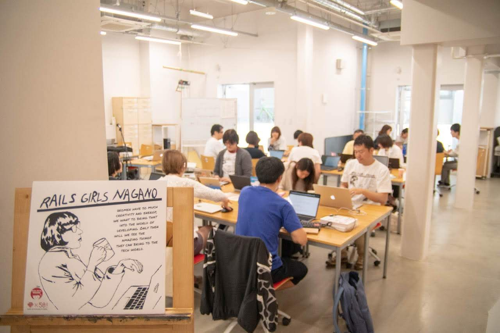
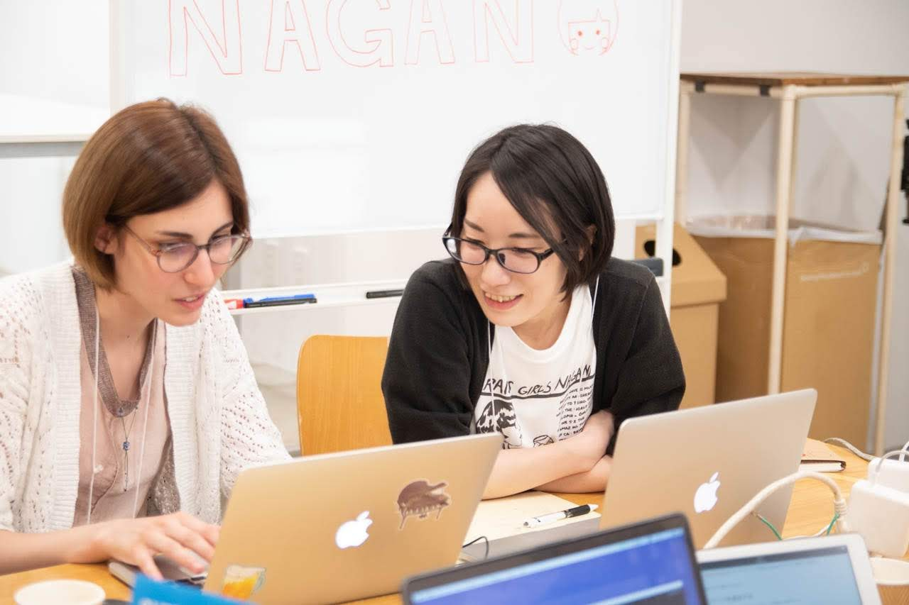
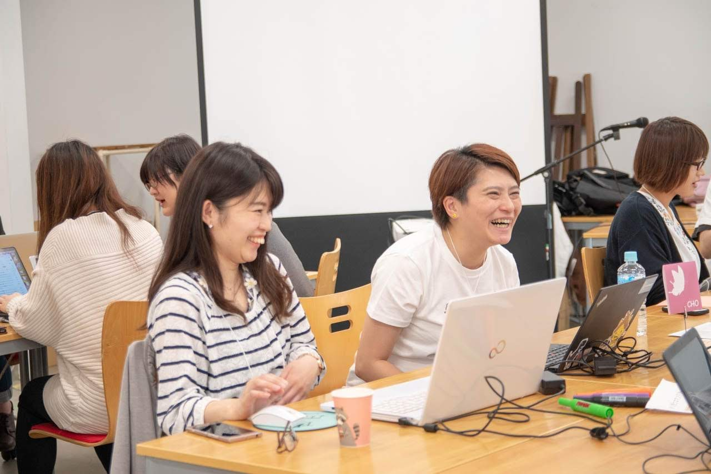
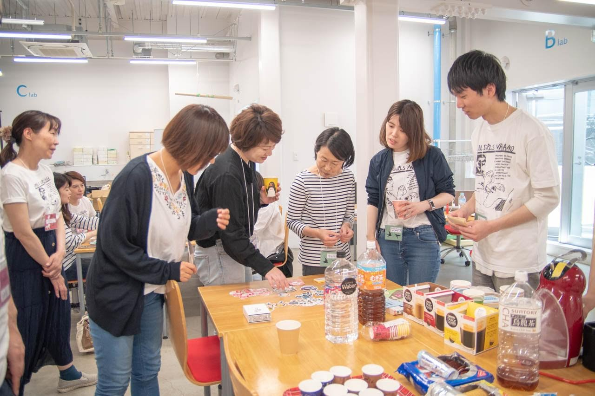

Rails Girls Nagano 1st 開催レポート
初稿：2019-08-10
はじめに
2019年5月24日(金)、25日(土)に Rails Girls Nagano 1st を開催しました。
この記事は、オーガナイザーである cobachie の視点でのイベント報告です。個人的な意見も含んでいますので、ご承知おきください。
なお、記事中の写真は 当日コーチとして参加してくださった @spring_aki さんが撮影してくださったものです。ありがとうございました！
日本で50回目の開催
Rails Girls は、プログラミング未経験の女性を主な対象としたイベントで、 Web アプリケーションの構築を通してテクノロジーに親しんでもらうことを目的としています。
2010年にフィンランドで初めて開催されてから世界中に広まり、2012年9月に日本ではじめての Rails Girls が東京で開催されました。
その後、全国各地で開催され、今回の Rails Girls Nagano 1st が日本で50回目となりました。
ここまで開催してこれたのは、コーチやスポンサーさまなど多くの方々のご支援によるものです。本当にありがとうございます。
今後ともご支援のほどよろしくお願いいたします。
Rails Girls Nagano
開催概要
-
日時: 2019年5月24日（金）、25日（土）
-
場所: 長野美術専門学校 さま
-
参加者: 23人（参加者 9人、コーチ・スタッフ 14人）
-
公式サイト: Rails Girls Nagano
長野県で2回目の開催
Rails Girls Nagano 1st は、長野県で2回目の開催でした。1回目は 2015年3月に開催した Rails Girls Shiojiri です。
Shiojiri の参加者が一緒にオーガナイザーをやってくれることになり、4年ぶりに2回目を開催することができました。
今回の会場が長野市になったこともあり、長野県での Rails Girls ということで「Rails Girls Nagano」に名前を変えて開催することにしました。
ワークショップ
ワークショップでは、Rails Girls ガイド に沿って構築した Web アプリケーションを、 PaaS にデプロイしてインターネットに公開するところまでやります。
今回はマンツーマンの体制でコーチについていただき、参加者それぞれのペースで進めてもらうことができました。
📷 ワークショップ風景
イベント当日の様子です。みなさんとてもよい表情をされていました。
|  |  |
|  |  |
 |
 |
|  |  |
📷 Friday Hug
恒例の Friday Hug の集合写真です。

Rails Girls イベント後の取り組み
Rails Girls は2日間だけのイベントですが、他のコミュニティに参加するきっかけになるといいなあと思っています。 Rails Girls Nagano では、イベント後に以下の活動を行いました。
Rails Girls Nagano, more!
「Rails Girls Nagano, more!」は、Rails Girls 卒業生を主な対象とした勉強会です。
Rails Girls Shiojiri のときから月に1回くらいのペースでオンラインで開催しており、 Shiojiri ・ Nagano の参加者だけでなく、ほかの地域の方にも参加していただいています。
最近は Rails Girls の次のステップとして Ruby の基本を知ろうということで、ゼロからわかるRuby超入門 の読書会を行っています。
Rails Girls から地域コミュニティへ
Rails Girls は、地域コミュニティの方たちにコーチなどで協力していただき、イベント後は Rails Girls 参加者が地域コミュニティに参加する という循環を想定していて、 実際そのようにうまくまわっているところも多いと思います。
しかし、長野県内には Ruby の地域コミュニティがありませんでした。（正確にいうと、コミュニティはあったのですが休眠状態でした。）
そこで今回コーチとして参加していただいた地元の Rubyist を中心に計画し、 7/20 に Nagano.rb を開催しました。
今後は Nagano.rb と Rails Girls Nagano で連携していけるといいな、と思っています。
最後に
Rails Girls は参加者にプログラミングを経験してもらうためのイベントですが、参加者のためだけのものではありません。
オーガナイザーやスタッフとしてイベントを運営したり、コーチとして人に教えたりすることからは多くの学びがありますし、 参加してたくさんの方と出会えることが素敵な経験になります。
Rails Girls に興味を持っていただけたら、お近くの Rails Girls にご参加いただければと思います。
そして、Rails Girls を開催したいという方がいましたら、ぜひやっていきましょう！
私たちが地域コミュニティがなくても開催したように、 地域ごと、オーガナイザーごとにいろんな思いややり方があっていいと思いますので、気負わず手をあげていただければと思います。
（Rails Girls Japan では各地での開催をサポートしていますので、遠慮なくご相談ください！）
著者について
cobachie (@co_bachie)
長野県松本市在住の Rails プログラマ。
近くに Ruby コミュニティがあるといいなあという気持ちで活動中です。